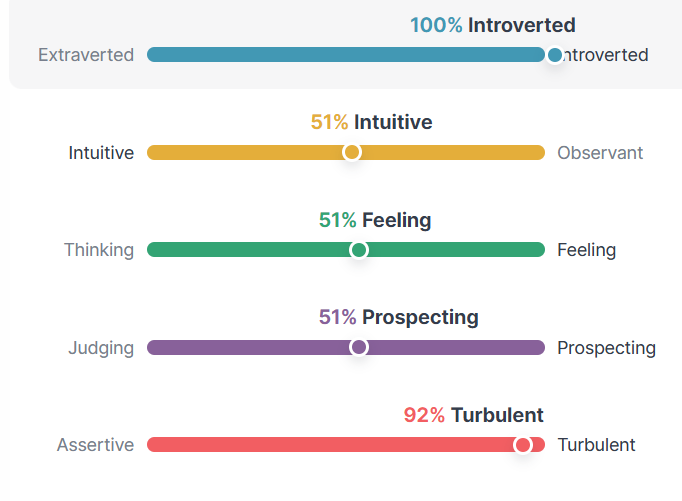
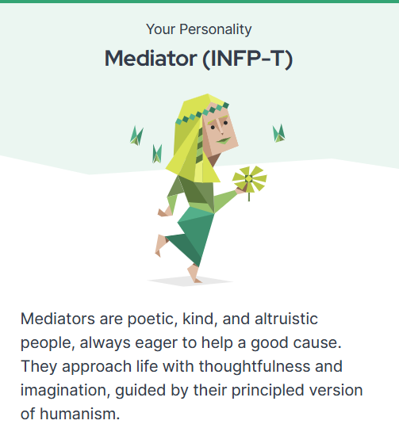

Based on the results, I scored 100% as an introvert. According to the 16Personalities report, this means I tend to prefer fewer, but deeper and more meaningful interactions, and I’m naturally drawn to calmer environments. I couldn’t agree more. I can count my close friends on one hand, and I’d much rather spend a Friday night in my room watching a movie than be out at a party—it's just how I feel most at ease.
When it comes to being both intuitive and observant, I think my 51% score reflects a balance. I definitely find myself getting lost in my thoughts and enjoy spending time in my own head, but I’m also keenly aware of my surroundings. I learn best by observing the world and the people in it, rather than just reading about it from a distance. It’s a mix that works well for me.
My 51% score on feeling resonates with how emotional I can be. I tend to lead with my heart, often letting my emotions drive my decisions instead of logic, which can sometimes lead to challenges. I know this about myself, and while it makes me empathetic, it can also make certain situations a bit more difficult to navigate.
The one result I didn’t quite agree with was my 51% score in Prospecting, which described me as flexible and spontaneous. As someone who deals with anxiety, spontaneity is definitely not my strength. I prefer structure and careful planning, even down to calculating exactly when I need to leave the house to avoid unnecessary stress. Being easy-going is something I strive for, but it’s not how I operate naturally.
Lastly, I scored 92% turbulent, which caught me off guard at first. But when they explained that this means I’m sensitive to stress, self-conscious, and a bit of a perfectionist, it all made sense. I’ve always been hard on myself and hyper-aware of how I come across to others. Reading through these results has given me a lot to reflect on, and I can definitely use this insight to work on becoming a better version of myself.
Even though I've taken more online personality quizzes than I can count, it still amazes me when the results seem uncannily accurate. Being a Mediator (INFP-T), I’m often described as a warm-hearted person, driven by a deep desire to help others. My imagination and empathy tend to guide how I interact with the world, and I like to think those qualities reflect who I am. Maintaining long-term friendships can sometimes be challenging for me, but I find it surprisingly easy to connect with people on a deeper level. When I do decide to push past my usual boundaries and step into social settings, striking up conversations feels almost effortless, as though I instinctively understand where others are coming from.